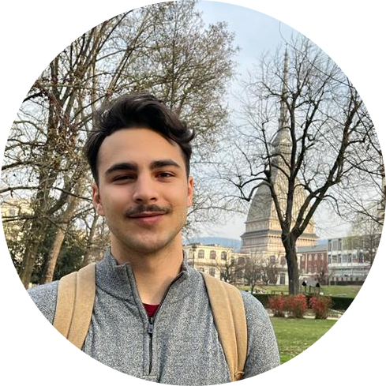

|  | Bernardo Lima Fagundes FontesMechanical Engineering student at Politecnico di Torino. Programmer/Developer |
| 2005-2019 | Fundaçao Torino |
| 2019-Today | Politecnico di Torino |
| Python | ★ ★ ★ ★ ★ |
| HTML | ★ ★ ★ |
| C/C++ | ★ ★ ★ ★ |
| Portuguese: | Mother Language | ||
| Italian: | Mastery of Proficiency | ⬛⬛⬛⬛⬛⬛ | C2 |
| English: | Advanced | ⬛⬛⬛⬛⬛🔲 | C1 |
| Spanish: | Upper Intermidiate | ⬛⬛⬛⬛🔲🔲 | B2 |